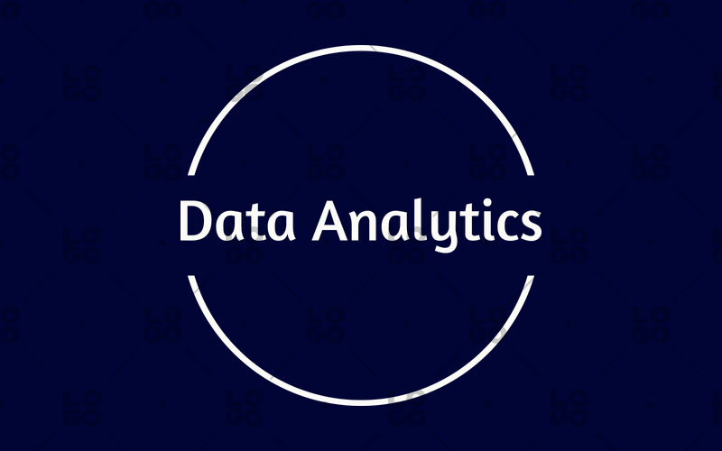

Work Experience

A.I. Intern, Smartknower by Microsoft
Dec 2020 – Feb 2021
Dec 2020 – Feb 2021
Trained a Deep Learning Convolutional Neural Network to detect whether a person is wearing a mask or not…

Trexova Wellbeing Pvt. Ltd. | Full Stack Developer
March 2022 – March 2023
March 2022 – March 2023
Engineered 4 ASP.NET Core microservices handling 20K+ daily healthcare transactions with 99.8% uptime…

Kailash Healthcare Ltd | Data Analyst
April 2024 – Feb 2025
April 2024 – Feb 2025
Conducted fraud analytics and risk mitigation for Fortune 500 audit clients, boosting scope by 100%…

Internship, Infosys | System Engineer Trainee
March 2025 – June 2025
March 2025 – June 2025
Contributed to full-stack development by styling UIs with HTML/CSS, integrating 6 REST APIs in C#…